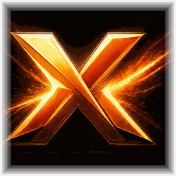
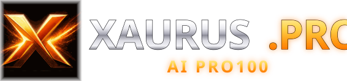

Логотип xaurus.pro — «Оригинальная эмблема»
Логотип сайта повторяет состав оригинального логотипа Xaurus AI Pro100: объёмный золотой X со свечением,
«XAURUS» хромом, «.PRO» золотом, подпись «AI PRO100». Знак — растровый кроп X из оригинала
(x_emblem_256.png); в v4a.svg он встроен как data-URI, потому что SVG внутри
<img> внешние файлы не подгружает. Отдельный PNG остаётся источником знака, favicon и аватарок.
Оригинал и знак

brand/xaurus_1024.jpg — оригинал

кроп знака — x_emblem_256.png
Логотип сайта

Напрямую −20 %шапка сайта, высота логотипа 44 px
Крупно
Знак (favicon, аватарки)
На светлом фоне
на светлых поверхностях — на чёрной плашке (отдельная светлая версия — открытый вопрос)